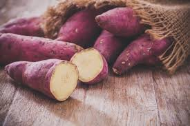
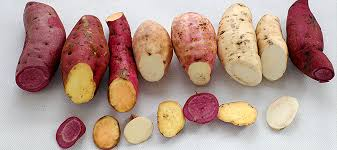
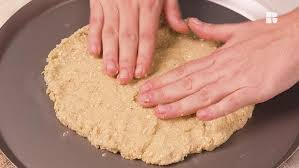

A batata-doce é um tubérculo de sabor adocicado, bastante consumido por quem busca uma alimentação mais saudável. Ela é rica em fibras, tem baixo índice glicêmico e é cheia de nutrientes.
A batata-doce ajuda com boas quantidades de carboidratos, fibras, vitaminas do complexo B, vitamina A, vitamina C e minerais, como potássio e magnésio, o que garante diversos benefícios, como diminuição do risco de diabetes, câncer e infarto, melhora da saúde intestinal e aumento da massa muscular.
A batata pode ser encontrada nas cores branca, creme, laranja ou roxa, que variam no sabor e o teor de antioxidantes, ela tem um sabor levemente doce com uma casca grossa roxa ou avermelhada.
Este tipo de batata pode ser consumida cozida ou assada, mas também é principalmente usada no preparo de mousses ou ainda como farinha para pães, biscoitos e massas no geral.
